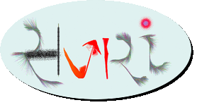
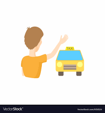

<!--
  Generated template for the ClientPage page.

  See http://ionicframework.com/docs/components/#navigation for more info on
  Ionic pages and navigation.
-->
<ion-header>

  <ion-navbar align-title="center">
    <div class="heading">
    <ion-title>
      
    </ion-title>
    <button ion-button menuToggle>
      <ion-icon name="menu"></ion-icon>
    </button>
  </div>
  </ion-navbar>

</ion-header>

<ion-content class="login-background">
  <button ion-button color="btn" (click)="SendLocation()" id="taxi">
    
  </button>
  <div id="map" style="width:100%; height:100%;"></div>
</ion-content>
